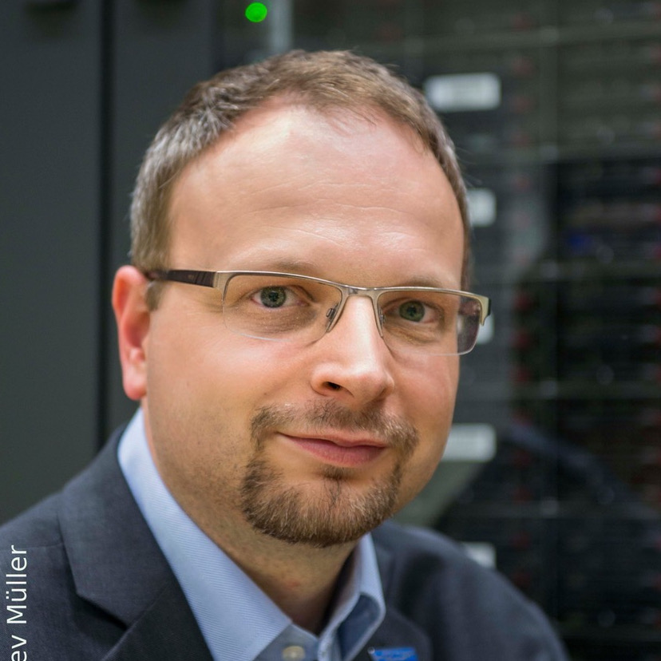
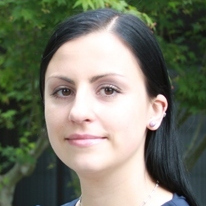

Workshop Abstract
Modern software engineering is getting increasingly complicated. Especially in the HPC field, we are dealing with cutting edge infrastructure and a novel problem with unprecedented scale. The ability to monitor and analyze such applications and infrastructure's performance is imperative for the future of improvement, design, and maintenance. In the current era, the writing and maintenance of these applications have ceased to be the job solely of computer scientists and has grown to encompass a wide variety of experts in mathematics, science, and other engineering disciplines. Many developers from these disciplines have not received a formal education in computer science and rely increasingly on the tools created by computer scientists to analyze and optimize their code, which shows that there's a need for a forum to work together.
Workshop Overview
The Workshop on Performance EngineeRing, Modelling, Analysis, and VisualizatiOn STrategy (PERMAVOST) goal is to bridge tools developers and end users of performance analysis tools. It is a full day workshop with a keynote in conjunction with HPDC 2021. We are hoping that the stakeholders, which are application developers, domain scientists, analyst, and tools developers can collaborate and build a bridge to fill in the gaps in various topics such as:
- Key metrics, patterns, and performance pitfalls including the strategies to recognize and use the performance information to improve the applications.
- Facing challenges that are coming from the new computing architecture, programming paradigm, and various scale of data that needs to be processed effectively.
- Research needs to use modern principles of usability design integrated inside performance analysis tools to better aid its users.
- Analysis and methodology that can be utilized and understood for users with various HPC knowledge spectrum.
Topics of interest
Our workshop with encompass the following topics of interest:
- Performance analysis and modelling on the real world applications
- Data visualization in high level performance analysis
- Inefficiencies in programming patterns or computing architecture
- Patterns, anomaly detection, and performance characterization in HPC applications
- Performance engineering strategies and use cases.
- Analyzing application performance in Cloud environment and other ubiquitous technology
- Machine learning aided performance analysis
Call for Paper
All submitted papers should be formatted using the ACM Master Template with sigconf format (please be sure to use the current version). The necessary document can be found here
General Instructions
- Full 6 -8-page papers (including all text, figures and references)
- Submissions must be in English
- Submissions must be in PDF format
- Only web-based submissions are allowed. Paper needs to be submitted via PERMAVOST 2021 EasyChair
- We use single-blind reviewing process so you can keep authors' names, publications, etc.
- Papers will get 3 reviews
- Accepted papers will be published in the workshop proceeding as part of the ACM Digital Library
Program
Keynote Speech:
|
Andreas Herten Juelich Supercomputing Centre |
"JUWELS Booster – Early User Experiences"
Over the last few years, GPUs became ubiquitous in HPC installations around the world. Today, they provide the main source of performance in a number of Top500 machines - for example, Summit, Sierra, and JUWELS Booster. JUWELS Booster is a recently installed Tier-0/1 system at Jülich Supercomputing Centre (JSC), currently the 7th-fastest supercomputer in the world, and the fastest in Europe. During installation of JUWELS Booster, a selected set of applications were given access to the system as part of the JUWELS Booster Early Access Program. The Program offered a unique opportunity for working with scientific application owners intensively and participate closely and collaboratively in the process of preparation for the system.
This talk will present first experiences with JUWELS Booster and the applications utilizing the system during its first months. Applied methods for onboarding, analysis, and optimization will be shown and assessed. Highlights of the state of the art of performance analysis and modeling for GPUs will be presented with concrete examples from the JUWELS Booster Early Access Program.
Paper Presentation:
- TALP: A Lightweight Tool to Unveil Parallel Efficiency of Large-scale Executions - Victor Lopez (Barcelona Supercomputing Center), Guillem Ramirez Miranda (Barcelona Supercomputing Center), Marta Garcia-Gasulla (Barcelona Supercomputing Center)
- Predicting How CNN Training Time Changes on Various Mini-Batch Sizes by Considering Convolution Algorithms and Non-GPU Time - Peter Bryzgalov (STAIR Lab, Chiba Institute of Technology), Toshiyuki Maeda STAIR Lab, Chiba Institute of Technology), Yutaro Shigeto (STAIR Lab, Chiba Institute of Technology)
- On the Exploration and Optimization of High-Dimensional Architectural Design Space - Vincent Bode (Technical University of Munich), Fariz Huseynli Technical University of Munich), Martin Schreiber (Technical University of Munich), Carsten Trinitis (Technical University of Munich), Martin Schulz (Technical University of Munich)
Discussion Panel:
|  |
Guido Juckeland Helmholtz-Zentrum Dresden-Rossendorf, Germany |
|
Lucas M. Schnorr Federal University of Rio Grande do Sul, Brazil |
|
|
Max Katz NVIDIA, USA |
|
|  |
Olga Pearce Lawrence Livermore National Laboratory, USA |
"The Future of Performance Analysis and Engineering"
In this panel, a team of four experts in performance analysis, parallel computing, and distributed systems discuss the future of performance analysis. A particular emphasis will be placed on how the growth of GPUs and cloud computing are changing the landscape of tools and techniques we are currently using. This panel will discuss the limitations of today's technology, the barriers to progress, the research which may help us overcome these barriers and provide insight into what future tools may look like. The panel is in the format of question & answer session given by the moderator combined with interactive communication with the audience. We encourage participants to join our interactive panel discussion
Workshop Chair
- Jesus Labarta - Barcelona Supercomputing Center
- Radita Liem - RWTH Aachen University
- Connor Scully-Allison - University of Arizona
- Ana Veroneze Solórzano - Federal University of Rio Grande do Sul
Program committee
- Arghya Chatterjee - Lawrence Berkeley National Lab
- Brian J. N. Wylie - Juelich Supercomputing Center
- Cédric Valensi - University of Versailles
- Charlene Yang - NVIDIA
- Christian Terboven - RWTH Aachen University
- Jay Lofstead - Sandia National Lab
- Jonathan Boyle - NAG Ltd.
- José Gracia - HLRS Stuttgart
- Fouzhan Hosseini - NAG Ltd.
- Lucas Mello Schnorr - Federal University of Rio Grande do Sul
- Kate Isaacs - University of Arizona
- Marc-André Hermanns - RWTH Aachen University
- Marta Garcia Gasulla - Barcelona Supercomputing Center
- Rui Wu - East Carolina University
- Sameer Shende - University of Oregon
- William Williams - TU Dresden
Contact
If you have any problems or questions, please contact us via e-mail at: liem@itc.rwth-aachen.de